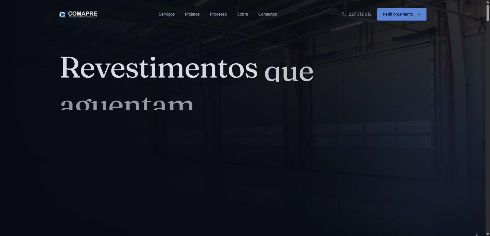
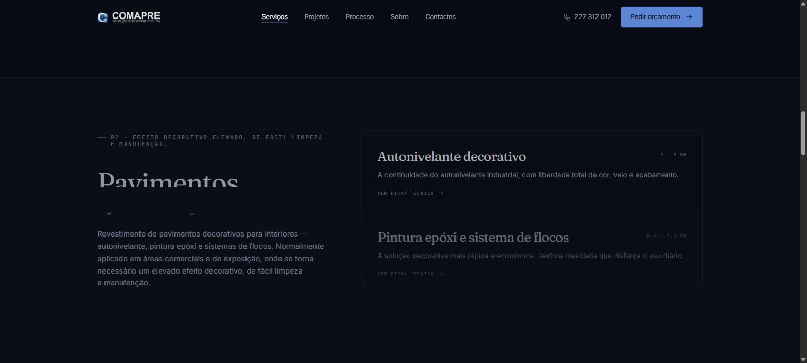
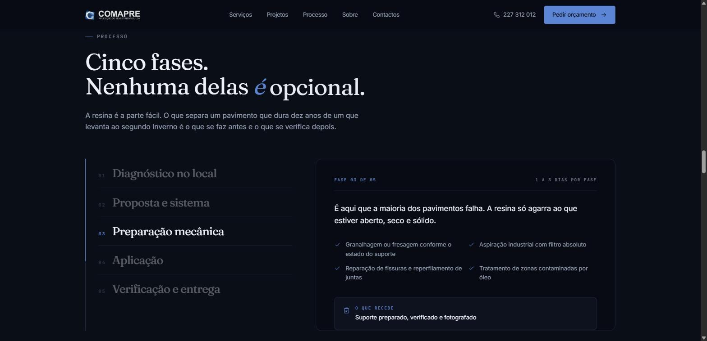
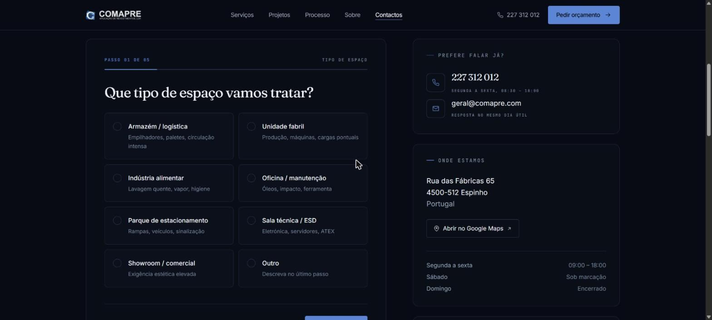
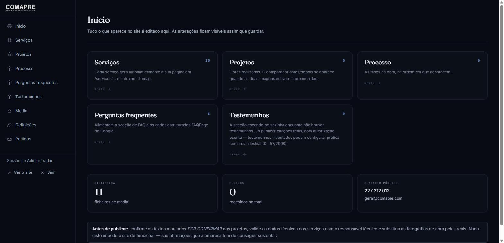

A website, a five-question quote engine and a full content back-office for an industrial floor-coatings applicator — designed and built end to end.

Comapre applies resin flooring to warehouses, food plants, workshops, car parks and ESD rooms — across mainland Portugal and the islands. Fifteen years of work, roughly 179,000 m² applied, and no website that reflected any of it.
The commercial problem was not visibility. It was qualification. Every enquiry arrived by phone as "how much per square metre?", a question that cannot honestly be answered without seeing the substrate. Sales time went into visits that were never going to convert, and the quotes that mattered waited behind them.
The resin is the easy part. What separates a floor that lasts ten years from one that lifts in its second winter is what happens before, and what gets checked after.
So the site was not built as a brochure. It was built to teach the buyer why preparation is the whole job, and to arrive at a qualified enquiry before anyone gets in a van.




Comapre now has a site that argues its case instead of listing its services, a quote flow that arrives pre-qualified with the substrate conditions already known, and a back-office the team runs without calling anyone.
The whole thing — strategy, copy, interface, front-end and CMS — came from one studio. There was no agency, no separate copywriter, no developer waiting on a handover file. That is the argument this case study is really making.